POSTS
[Bossa Nova] 브라질 음악다큐 Brazil, Brazil : 1편 Samba To Bossa - BBC
앞서 가는 착한 방송 BBC 에서 2007년에 제작한
3부작 브라질 음악다큐 Brazil, Brazil 의
1편 Samba To Bossa 에서 주목할 만한 장면들이다.
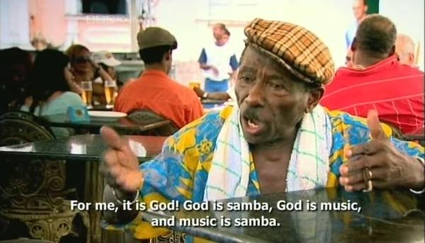
“나에게는 말이지, 신이 삼바야. 신은 음악이지. 음악은 삼바뿐야”
DVD로도 나와있는것 같은데 현실적으로 구하기는 힘들고…
BBC.Brasil.Brasil.1Of3.Samba.To.Bossa.2007.DVBC.Xvid.MP3.MVGroup.org.avi
이런 파일이 어둠의 세계에 가끔 출몰한다고 한다.
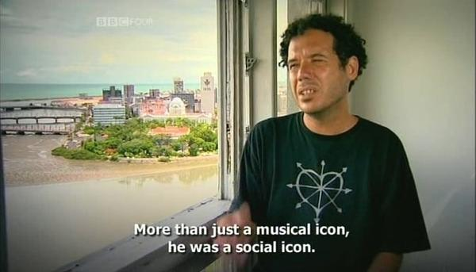
“Luis Gonzaga(브라질 댄스음악의 하나인 Porro의 아버지)는 그냥 음악의 아이콘이 아닙니다. 그는 사회적 아이콘이었죠”
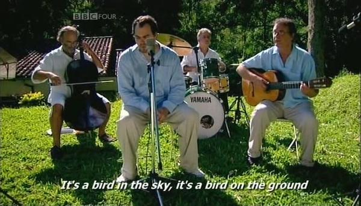
“Aguas de marco”를 부르는 Tom Jobim의 아들
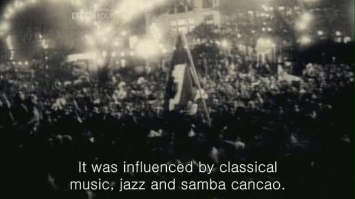
“보사노바는 클래식음악, 재즈, 그리고 쌈바 깐사옹의 영향을 받았다”
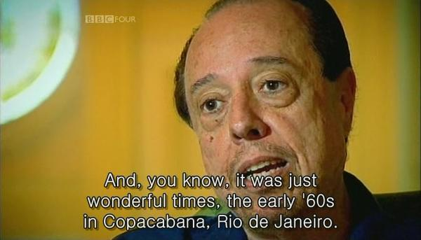
“그거 알아요? 리우 데 자네이루의 꼬빠까바나에서의 60년대는 정말 멋진 시기였죠”
Sérgio Mendes 할아버지 오래오래 음악하셔야 해요. 나이? 하지만 (나이먹는거) 아무것도 아니잖아요? Mas Que Nada!
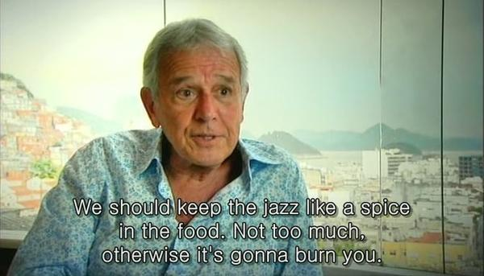
“보사노바에서 재즈는 (삼바에 대한) 양념 정도라고. 양념을 너무 많이 넣은 음식을 먹다가는 먹는 넘이 재가 되어버릴 수도 있는거야”(Carlos Lyra선생)
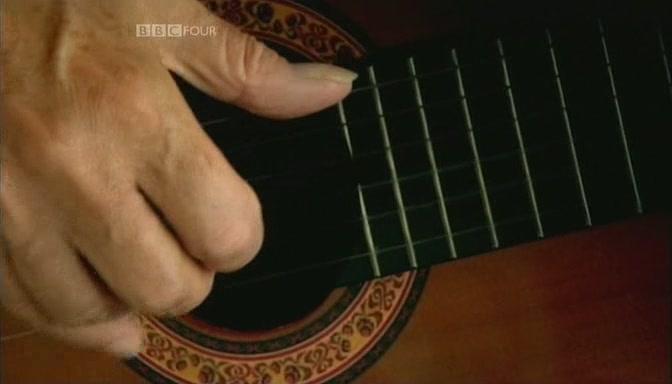
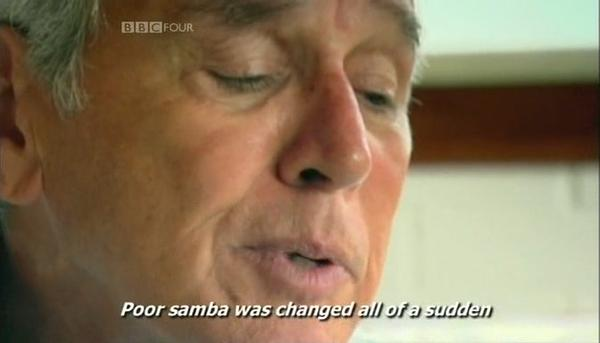
“불쌍한 삼바여! 재즈 때문에 갑자기 맛이 가버렸네”(Carlos Lyra선생)
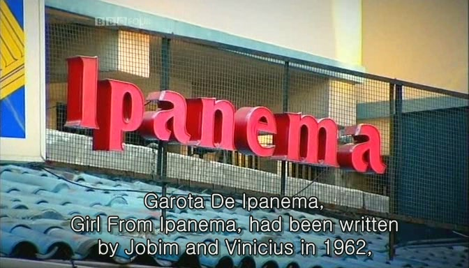
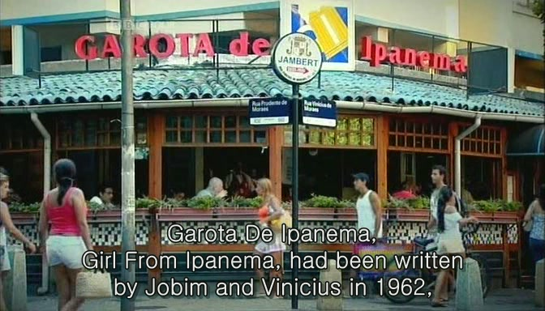
이빠네마의 소녀는 조빙과 비니셔스가 62년에 만든 곡이다.
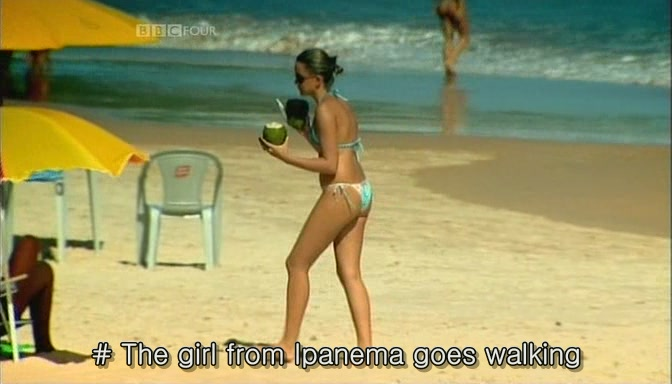
이빠네마의 소녀가 걸어가네
유튜브에서도 볼 수 있다